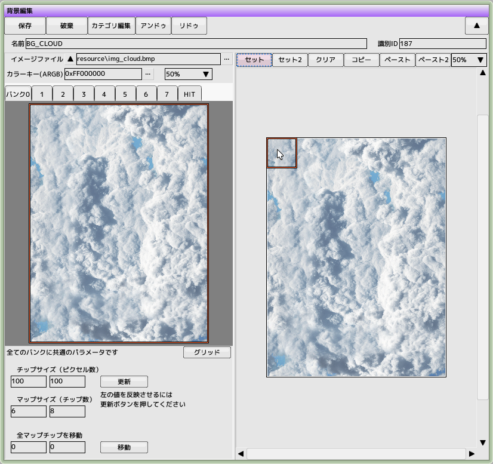
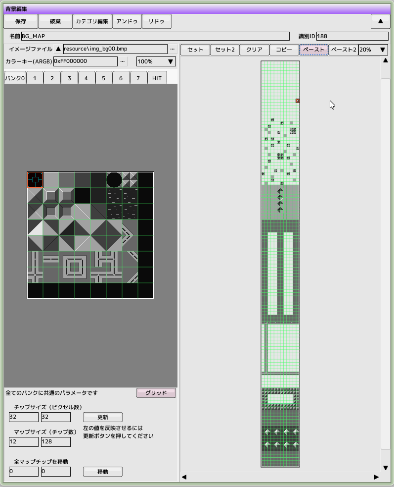
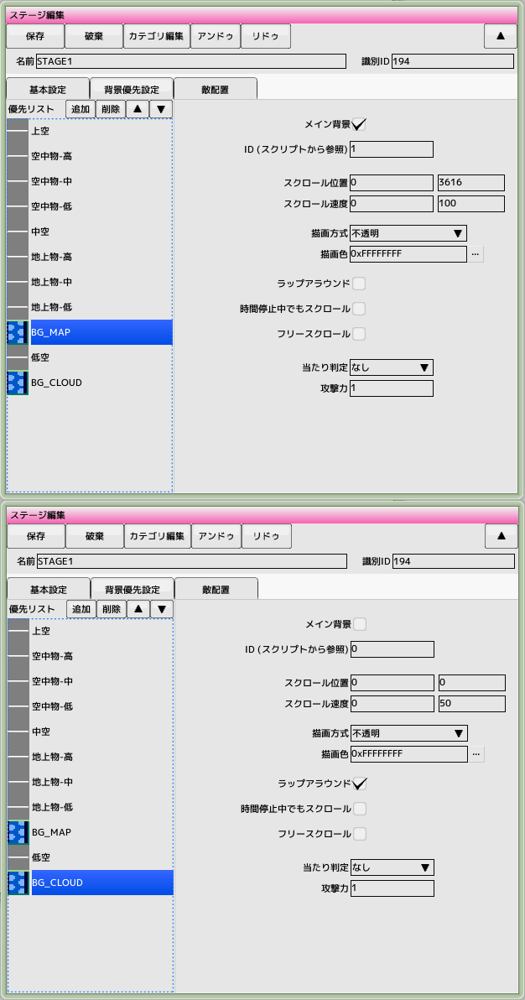
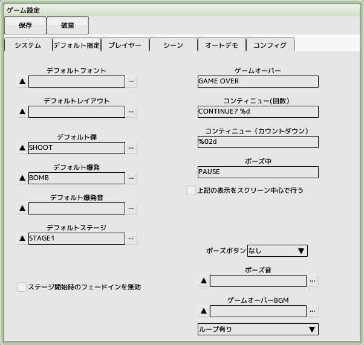
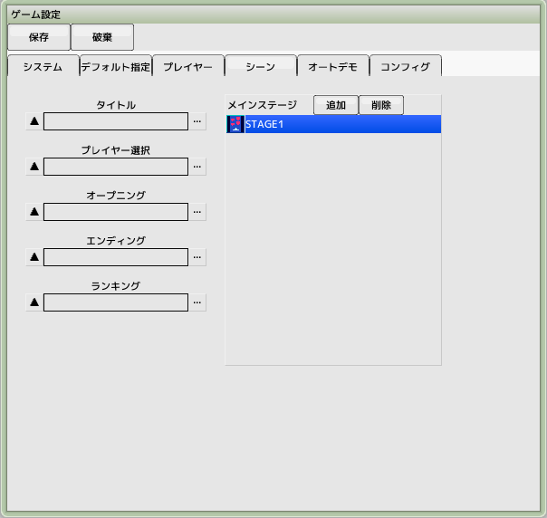
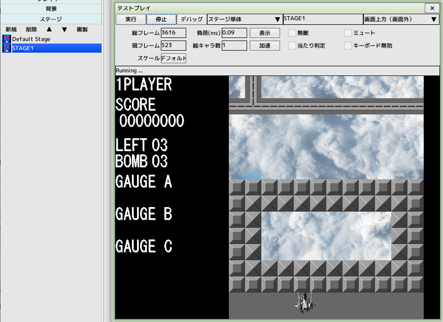

■元のページへ戻る
■元のページへ戻る
8.背景を作成する
背景には主に2種類あります。今回は両方作成します
1．ループスクロールするだけの画像としての背景
2．地上物を配置しキャラクタと同期する背景
前回のチュートリアルで作成したプロジェクトファイルを開いておいてください

ループスクロールする背景を作成する
プロジェクトの背景を新規作成します
名前を'BG_CLOUD'とします
イメージファイル'resource/img_cloud.bmp'を読み込みます
画像が600x800と大きいので縮小表示して画面内に収まるようにしてみてください
チップサイズを100,100に、マップサイズを6,8にします
(更新ボタンをクリックしてください)
左側のプレビュー画像を全て選択します(赤枠)
右側のマップをセットモードに切り替え、全マップチップを配置します
これでループスクロール用の背景は完成です

地上物を配置する背景を作成する
プロジェクトの背景を新規作成します
名前を'BG_MAP'とします
イメージファイル'resource/img_bg00.bmp'を読み込みます
チップサイズを32,32に、マップサイズを12,128にします
(更新ボタンをクリックしてください)
マップサイズがかなり大きいので拡大縮小（ホイール）とスクロール（右ドラッグ）を使ってうまくマップパーツを配置してください
マップの全部を埋めてしまうと奥の背景が見えなくなるので旨く配置してください

ステージを作成して背景を設定する
プロジェクトのステージを新規作成します
名前を'STAGE1'とします
基本設定タブはそのままで、背景優先設定タブを開きます
優先リストの追加ボタンをクリックしてBG_MAPを追加します
上向きの三角矢印をクリックして優先を変更します
右図のようにBG_MAPのパラメータを設定します
スクロールの位置がマップ表示開始位置になるので忘れずに設定してください
地上物配置に使うのでメイン背景にチェックを入れます
優先リストの追加ボタンをクリックしてBG_CLOUDを追加します
右図のようにBG_CLOUDのパラメータを設定します
ラップアラウンドにチェックを入れることでループスクロールにします

デフォルトステージに設定する
ゲーム設定のデフォルト指定タブを開きます
デフォルトステージへ'STAGE1'を登録します

メインステージへ登録する
ゲーム設定のシーンタブを開きます
メインステージへ'STAGE1'を追加します
メインステージへ登録することにより、通しプレイでのテストが出来るようになります

テストプレイ
テストプレイウインドウを表示し、プロジェクトのステージリストにある'STAGE1'をウインドウへドラッグ＆ドロップします
テストモードがステージ単体に変更され、自機が登場して背景のスクロールが始まります
■ページ上部へ戻る